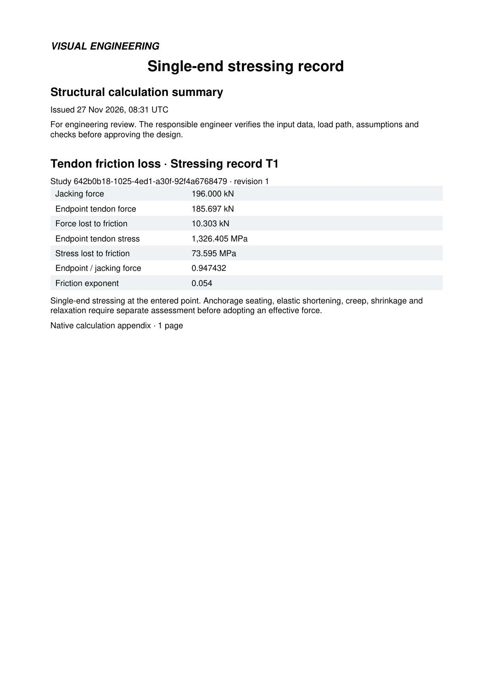

Tendon friction loss
A tendon stressed from one end carries 196 kN at the jack. The example has an angular deviation of 0.12 rad to each point, a friction coefficient of 0.2 and angular wobble of 0.005 rad/m. The calculated endpoint force is 187.563 kN at 20 m and 185.697 kN at 30 m.
The issued calculation below records the 30 m point and its 10.303 kN friction loss. The engineer assesses anchorage seating, elastic shortening, creep, shrinkage and relaxation separately before adopting the effective prestress.
Loading the report…
